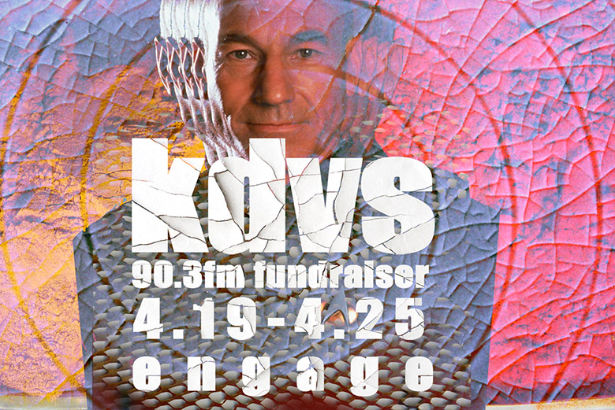

a selection of work by daniel pedersen
portfolio of daniel pedersen
Early explorations of MS Paint, I entered the world of digital art around 1997. Invokingepic space battles pixel by pixel on bitmap images of the international space station in orbit. From there I expanded my tool set to include Adobe Photoshop, Dreamweaver, Flash, HTML and JavaScript, in the pursuit of a higher fidelity expression.
previous work
I spent the early years making stylized text graphics for the headers of never to be built websites. Always with an eye toward the esoteric ASCII graffiti crews that represented the various hacker/cracker crews of the era. After a summer internship at a graphic design firm in Denmark where I attended highschool, my concept of design began to mature and expand. At the intersection of the imagined and itsdigitally represented counterpart there is a liminal space that has always fascinated me. The trusted keyboard and mouse feel to be often creatively constraining with its narrow and archaic input methods. I am interested in finding novel approaches to user interaction and co-creation. Particularly through the exploration of fresh, exponentially unfolding AI models for previously unconsidered masterpieces. The flow state which exists naturally between people engaged in collaborative art or expression is a phenomenon that I feel intuitively is not limited to human - human interaction. With the latest AI models, the potency of human - AI interaction and collaboration is the most awe inspiring thing to me since first considering the internet. These are the areas I draw inspiration from when looking to create functional design

Kiva Lost Farm
Promotional graphic for cannabis fruit chews from Kiva for People's Kush.

From Beyond the Rave
This is a flier I did for an event that I played music at for Halloween 2021

Treebeard Camp Sticker 2021
The sticker that I designed and printed for Camp Treebeard for the renegade that wasn't burning man. And we didn't end up going, so there are just 50 of them floating around somewhere. I feel like this was appropriate for the burning man that wasn't. Shitting in a bucket all week = shitting man. We missed out big time.

Minutia and Locksy
A flier I made for an event that I djed at with a friend.
KDVS Fundraiser Landing Page
Graphic I desinged for KDVS 90.3 FM fundraiser in 2010 or something like that.
Westeros Side Story
This is a poster I designed for the Bike City Theatre Company for their production of Westeros Side Story. 5 full movie poster size prints were made.